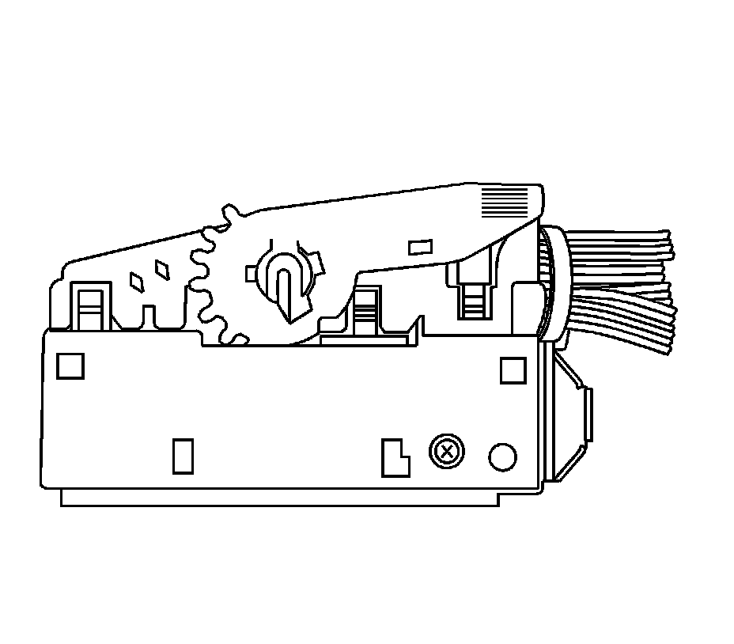
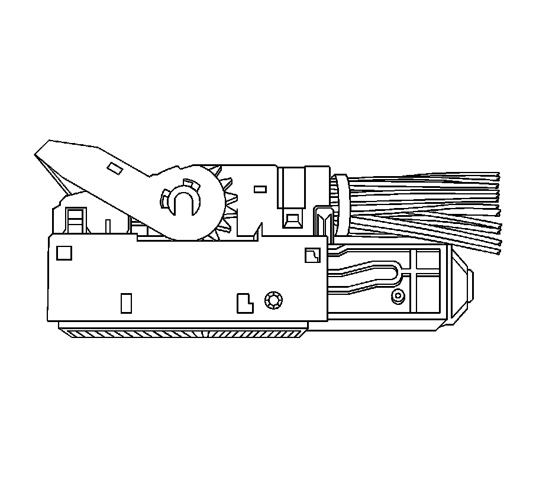
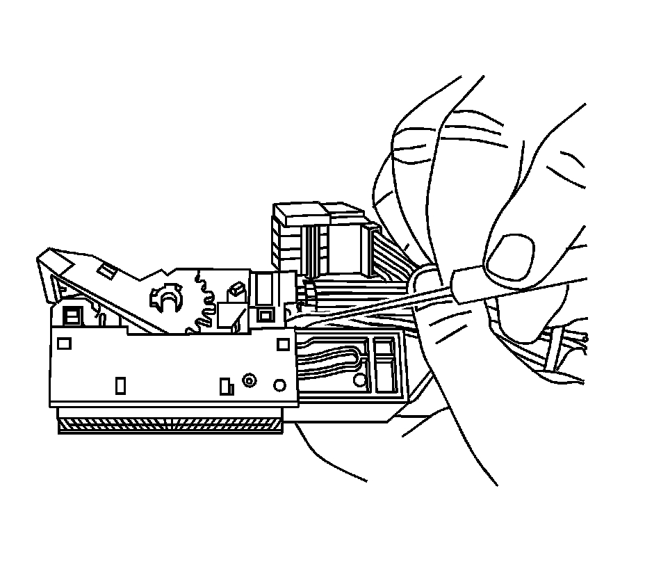
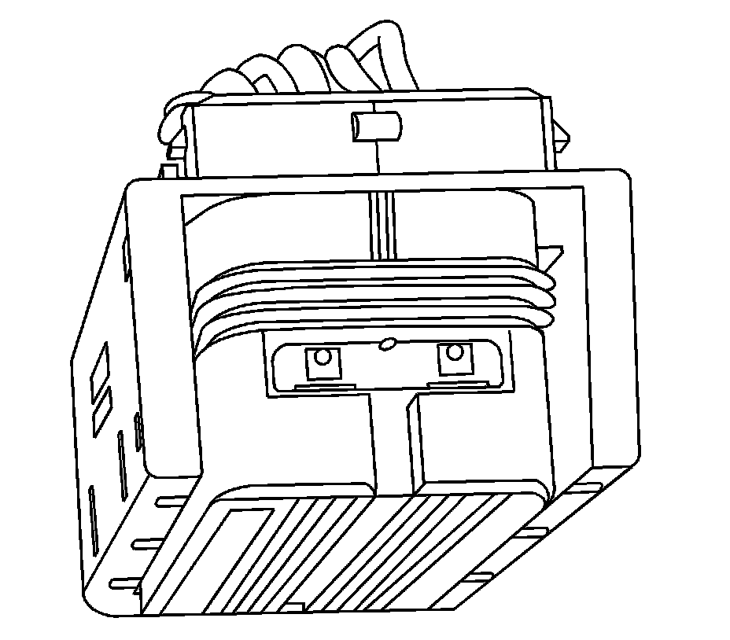
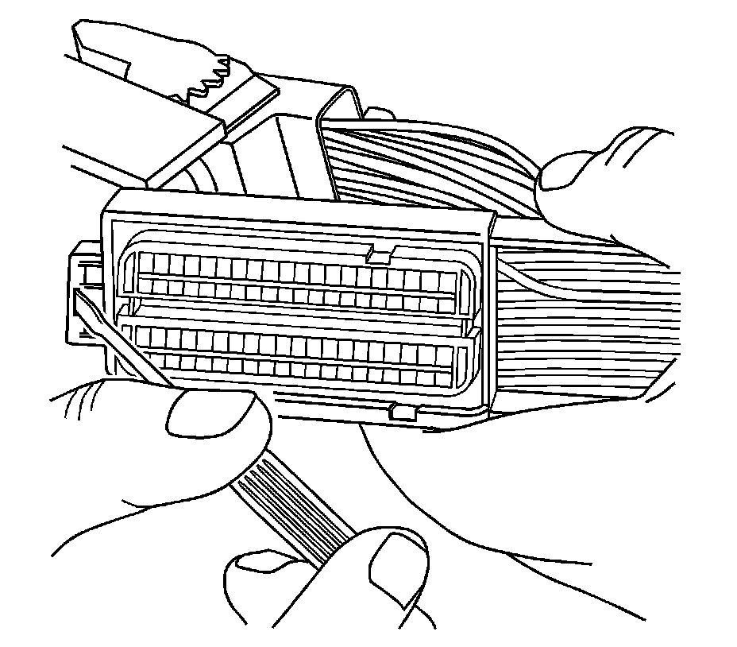
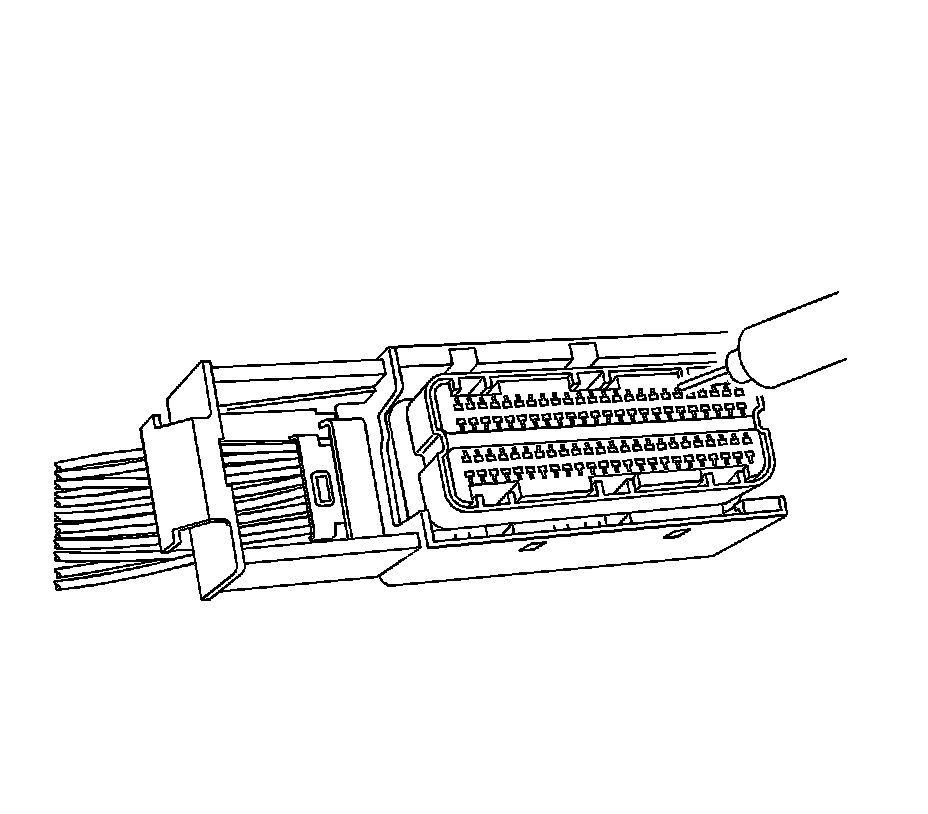

Bosch Connectors (ECM)
Bosch Connectors (ECM)
Tools Required
J-38125 Terminal Repair Kit
Removal Procedure

1. Locate the assist lever on the top of the connector. Move the assist lever to the forward position.

2. Disconnect the connector from the component.

3. Locate the dress cover locking tabs at the corners of the connector. Use a small flat-blade tool to release the locking tabs and remove the dress cover.

4. The terminal positive assurance (TPA) is located in the front of the connector.

5. Use a small flat-blade tool to remove TPA from the connector.

6. Use the J 38125-213 or the J 38125-556 (GM P/N 12093647) tool to release the terminals by inserting the tool into the terminal release cavity. See the release tool cross reference in the Reference Guide of the J-38125 to ensure that the correct release tool is used.
7. While holding the removal tool in place, gently pull the wire out of the back of the connector. Always remember never use force when pulling a terminal out of a connector.
Repair Procedure
Important: Ensure that the dress cover and connector body are both in the released position before reassembling. Failure to do so may cause damage to the connector and component.
Use the appropriate terminal and follow the instructions in the J-38125 .
Location of the terminal in the repair tray and the proper crimp tool can be found in the appropriate connector end view.